Строение Земли
Земля, как и все другие планеты земной группы, имеет слоистое строение.
Выделяют три основных слоя:
16% объема Земли составляет ядро;
83% — мантия;
1% — земная кора.
Ядро Земли
В настоящее время нет таких технологий и инструментов, которые позволили бы человеку пробраться к самому центру Земли. Так что вся имеющаяся на данный момент информация о ядре нашей планеты основывается на косвенных исследованиях: например, на анализе колебаний, исходящих от ядра. Поэтому в определении ядра мы встретим слово «предположительно».
Ядро — центральная, самая горячая, плотная и тяжелая часть Земли, предположительно, состоящая из железо-никелевого сплава с примесью других химических элементов.
Глубина залегания этого «слоя» Земли — около 2900 км.
Ядро имеет форму шара радиусом 3500 км, в котором выделяют 2 слоя:
твердое внутреннее ядро радиусом около 1300 км;
жидкое (пластичное) внешнее ядро радиусом 2200 км.
Мантия
Мантия — вязкая раскаленная оболочка Земли, расположенная между ядром и земной корой.
Граница Гутенберга — граница, отделяющая мантию от ядра и находящаяся на глубине примерно 2900 км.
Граница Гутенберга — граница, отделяющая мантию от ядра и находящаяся на глубине примерно 2900 км. Соответственно, мантия — это самая массивная из внутренних оболочек Земли. Она простирается до глубины около 2900 км, и на нее приходится 70% массы планеты. В основном мантия состоит из тяжелых металлов, таких как кремний, магний, железо, сплав которых образует расплавленное вещество мантии — магму. Во время извержений вулканов она теряет часть своих газов и при выходе из недр наружу превращается в лаву.
Мантия подразделяется на:
верхнюю — глубина до 660 км;
нижнюю — глубина от 660 до 2900 км.
В верхней мантии выделяют слой — астеносферу. Именно по ней движутся литосферные плиты — крупные участки земной коры, которые мы детально обсуждаем в статье «Тектоника Земли». Ее мощность составляет от 100 до 250 км. Из вещества астеносферы образуются магматические и метаморфические горные породы.
Земная кора и верхняя часть мантии до астеносферы слагают литосферу. Толщина литосферы под континентами 150—300 км, под океанами — от нескольких метров до 150 км.
Литосфера — это внешняя твердая оболочка Земли, включающая в себя земную кору и верхний слой мантии до астеносферы.
Это очень полезная оболочка нашей планеты. Именно она защищает нас от жара раскаленного ядра, из нее человечество добывает все полезные ресурсы. Литосфера, по сути, является нашей территорией для жизни.
Земная кора
Земная кора — твердая внешняя оболочка Земли, верхняя часть литосферы.
1. Континентальная или материковая земная кора.
Этот тип коры образует континенты. Его средняя мощность (толщина) около 35 км. Но это значение может сильно колебаться и достигать 70 км под горами: например, под Гималаями (здесь находится наивысшая точка на планете — Эверест).
2. Океаническая земная кора.
Она расположена под океанами, имеет мощность от 5 км (под Марианской впадиной — самой глубокой в мире) до 15 км.
Граница Мохоровичича (граница Мохо) — граница, отделяющая мантию от земной коры.
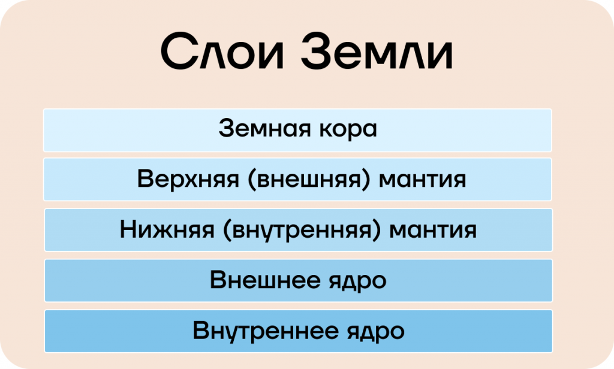Горные породы
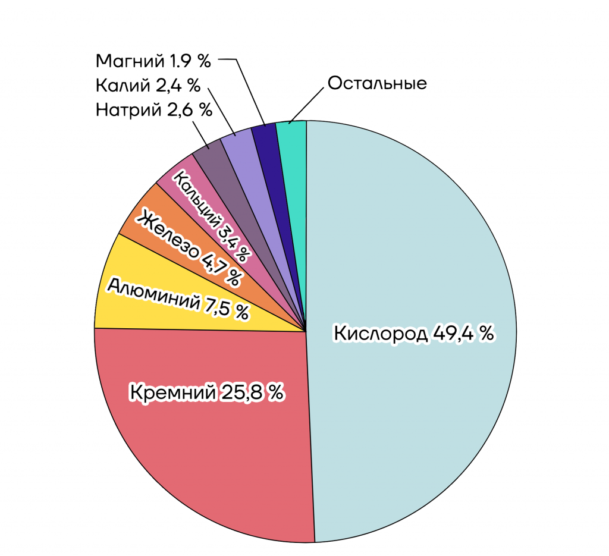Химические элементы могут образовывать минералы, из которых, собственно, и состоят горные породы. То есть земная кора состоит не из случайной смеси химических элементов, а из горных пород, про которые мы сейчас и будем говорить.
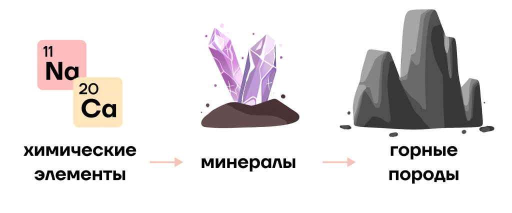Минерал — это природное тело, однородное по составу и строению, представляющее собой химический элемент или химическое соединение (сложное вещество, состоящее из нескольких элементов).
Горные породы — природные тела, имеющие определенный состав, свойства, внешние признаки, состоящие из нескольких минералов и других горных пород. Большинство горных пород твердые, но есть и жидкие.
Полезные ископаемые — минералы и горные породы, которые человек использует в своей повседневной жизни и в промышленности.
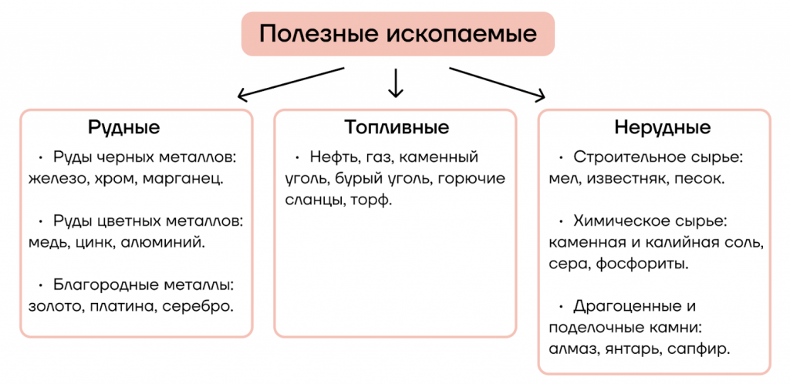Гидросфера
Гидросфера — водная оболочка Земли, включающая в себя все агрегатные состояния: твердое, жидкое, газообразное. Она занимает около 70% площади планеты.
В состав гидросферы входят Мировой океан, воды суши, водяной пар атмосферы. Предполагают, что гидросфера возникла в результате выделения из мантии Земли жидких неподвижных растворов и газов. Общий объём воды на планете остаётся неизменным и составляет около 1,5 млрд км 3.
Мировой океан — все водное пространство вне суши. Занимает большую часть поверхности Земли: около 70% всей территории планеты.
Мировой океан включает в себя 4 океана – Тихий, Индийский, Атлантический и Северный Ледовитый.
Цунами – огромные морские волны, возникающие в результате сильных подземных землетрясений.
Тайфуны – это тропические циклоны, возникающие в зоне распространения муссонов Восточной Азии.
Муссоны – это переменные ветры, дующие на восточном побережье Евразии и Северной Америки и меняющие свое направление два раза в год. Летом они дуют с моря на сушу, а зимой, наоборот, с суши на море.
Моря
Море — часть океана, обособленная сушей или подводными поднятиями, имеющая свой гидрологический режим (изменение температуры воды, солености и т.д.).
Различают два вида морей по их расположению — внутренние и окраинные. Внутреннее море находится внутри материка, оно отдельно от океана, например, островами или полуостровами. Окраинные моря имеют открытую связь с океаном.
Залив – это часть водной поверхности, которая глубоко вдается в сушу.
Они обычно имеют узкое входное отверстие, которое соединяет их с морем. Примерами крупных заливов являются Гудзонов залив, Мексиканский залив, Бенгальский залив и Персидский залив.
Проливы – это морские пути, которые соединяют два больших водных пространства и разделяют смежные моря или острова.
Они важны для торговли и международного судоходства. Например, пролив Босфор, Гибралтарский пролив, пролив Ла-Манш и Магелланов пролив.
Приливы и отливы
Прилив – повышение уровня воды в океане или море.
Отлив – понижение уровня воды в океане или море.
Приливы и отливы возникают из-за взаимодействия нашей планеты и Луны. Так Луна, обладая силой притяжения, как бы «перетягивает» водную поверхность Земли, тащит ее за собой. Водная оболочка Земли вытягивается в направлении Луны, так происходят отливы. Когда Луна перемещается дальше по орбите и ее влияние на конкретные берега ослабевает, вода возвращается на место, создавая прилив. В течение суток, как правило, происходит два прилива и два отлива.
У берегов приливы в среднем достигают 4–6 метров. Самые высокие приливы фиксируются в заливе Фанди, расположенном на восточном побережье Северной Америки. Это неудивительно, ведь из-за своей вытянутой формы заливы чаще всего характеризуются высокими приливами, поэтому на территории многих из них строятся приливные электростанции (ПЭС), на которых можно получать электроэнергию от силы приливов.
Атмосфера
Атмосфера – это газовая оболочка Земли.
Не имеет точного верхнего предела, рассчитанного в километрах от поверхности. Условно ее границей считают высоту 150–200 км.
Постепенно переходит в околоземную часть космического пространства.
Движется вместе с Землей, так как на нее действует сила гравитации (сила притяжения земли).
Слои Атмосферы
Атмосфера имеет слоистое строение. С изменением высоты меняются различные характеристики воздуха, такие как температура, плотность, состав. Поэтому мы и выделяем разные слои. Каждый из них, кроме верхнего, имеет более-менее точные границы.
Слоев всего 5 начиная от поверхности планеты, это:
тропосфера,
стратосфера,
мезосфера,
термосфера,
экзосфера.
Погода
Погода – состояние нижних слоев атмосферы здесь и сейчас, либо за какой-то небольшой промежуток времени (до месяца) на определенной местности.
Климат – многолетний режим погоды: из года в год повторяются одни и те же характеристики.
Солнечная радиация
Солнечная радиация – это совокупность поступающего на поверхность земли солнечного излучения, которое включает в себя тепловое, световое, ультрафиолетовое и инфракрасное и другие.
Солнце распространяет вокруг себя мощное излучение в виде тепла, света, ультрафиолета и т.п. Лишь очень небольшая часть его достигает поверхности Земли. Но на своем пути солнечная радиация проходит через атмосферу Земли, поэтому она интересна нам в рамках этой темы. При этом излучение Солнца является движущей силой и главной причиной многих процессов и явлений, которые происходят на нашей планете. Об этом мы поговорим чуть позднее.
1.Прямая солнечная радиация. По названию можно определить, что она поступает прямо, когда солнечные лучи без каких-либо помех достигают поверхности Земли. Она проявляется в ясный, безоблачный день и приносит наибольшее количество тепла и света. В пустынных регионах больше всего прямой солнечной радиации, потому что они характеризуются именно такой погодой.
Рассеянная солнечная радиация. Если по пути к земной поверхности радиация сталкивается с какой-либо преградой — например, облаками — то она рассеивается в разные стороны. Но рассеивается не полностью, что-то всё равно достигает поверхности. Однако количество поступающей радиации существенно снижается. Следовательно, прозрачность атмосферы влияет на количество рассеянной радиации.
Вся солнечная радиация, дошедшая до поверхности Земли — и прямая, и рассеянная вместе – образуют суммарную радиацию.
Количество поступающей радиации зависит от угла падения солнечных лучей, то есть от географической широты. Чем ближе к экватору, тем больше угол наклона лучей и тем больше поступает тепла на земную поверхность.
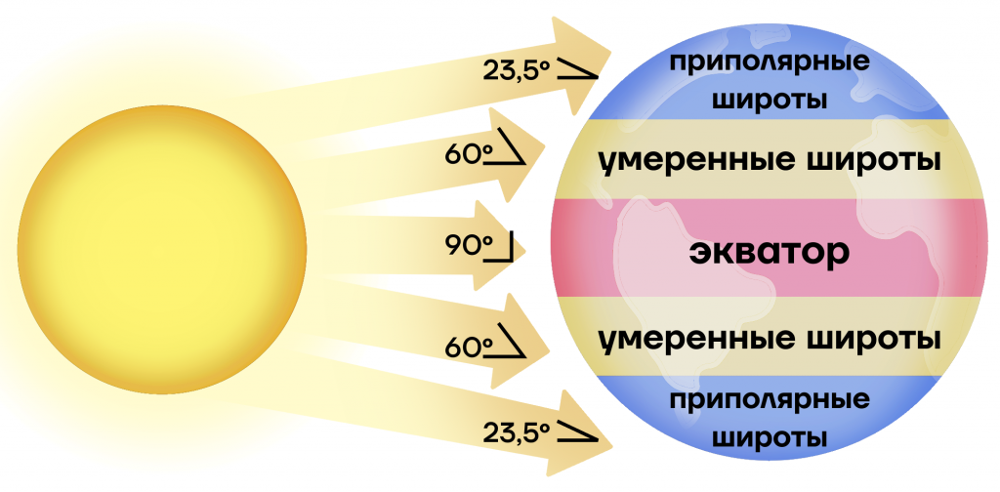Атмосферное давление
Атмосферное давление – это величина, с которой воздух давит на каждый сантиметр земной поверхности.
Мощность атмосферы составляет около 1600 км. Все это пространство условно заполнено воздухом – смесью газов, каждый из которых имеет свой вес.
Все в нашем мире подчиняется действию земного притяжения. И воздух не исключение. Он также притягивается к Земле, давит на нее. Но все таки эта величина варьируется в разных местах планеты. Там где толщина атмосферы, а соответственно и вес больше — давление выше. А там где толщина меньше, например в горах, вес ее тоже меньше, соответственно и атмосферное давление ниже.
С увеличением высоты давление падает: каждые 100 м на 10 мм рт. ст., так как чем дальше в космос, тем меньше частиц воздуха в атмосфере.
С помощью прибора — барометра-анероида, измеряется атмосферное давление, а единицами измерения являются миллиметры ртутного столба (мм рт. ст.). Средняя высота ртутного столба в барометре-анероиде на уровне моря равняется 760 мм. Это давление и принято за нормальное.
Низкое давление преобладает на экваторе и далее от него чередуется с высоким.
Ветер
Ветер – горизонтальное перемещение воздуха.
Важно не путать: зональное распределение давления связано с неравномерным нагреванием и остыванием поверхности, а причина ветра — перемещение воздуха из области повышенного давления в область пониженного. Ветер может при этом иметь отклонение в Северном полушарии – вправо, в Южном полушарии – влево из-за силы Кориолиса. Возникает она из-за того, что Земля крутится вокруг своей оси, и все процессы и явления по инерции отклоняются. На экваторе этого отклонения нет, а на полюсах оно максимально.
Постоянные ветры
Распределение давления определяет направление ветров. Всего их 3 и находятся они, как ни странно, между параллелями с высоким и низким давлением.
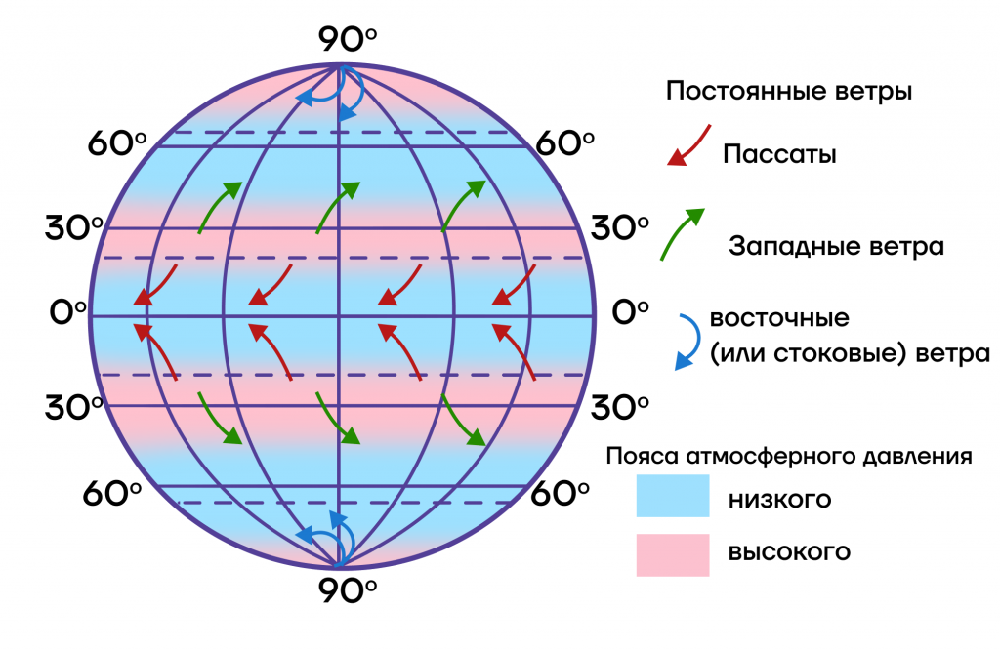Пассаты. Движение воздушных масс из тропических широт к экватору. Из повышенного давления в пониженное.
Западные ветры. Опять же движутся из тропических широт в умеренные. Из повышенного давления в пониженное и никак иначе! Мы также можемнаблюдать здесь отклонения от движения в Северном и Южном полушариях.
Стоковые (или восточные) ветры. Движутся от полюсов в умеренные широты. Также заметно отклонение.

Биосфера
Биосфера— оболочка Земли, заселённая живыми организмами, находящаяся под их воздействием и занятая продуктами их жизнедеятельности, а также совокупность её свойств как планеты, где создаются условия для развития биологических систем; глобальная экосистема Земли.
Границы биосферы определяются границами расселения живых организмов. Выделяют 3 основных слоя, составляющие биосферу: гидросфера, атмосфера и литосфера.
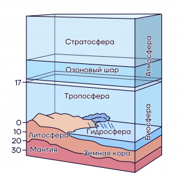1.В атмосфере (воздушная оболочка Земли) выделяют 3 слоя. Нижний слой, который плотно прилегает к Земле, называют тропосферой. Верхняя часть тропосферы примыкает к озоновому слою и выше его находится стратосфера.
2.В литосфере живые организмы встречаются до глубины около 4,5 км. Человек пока смог достичь глубины 12 км, благодаря постоянному бурению. Кольская сверхглубокая скважина остается пока самым глубоким вторжением человека в земную кору.
3.Гидросфера (водная оболочка Земли) имеет самую глубокую точку, которая располагается на дне Марианской впадины на западе Тихого океана. Она составляет 11 км. Самое удивительное, что на этой глубине были найдены пластиковые пакеты. Пагубное влияние деятельности человека может достигать и такой глубины.
Биологический круговорот и превращение энергии в биосфере, роль в нем организмов разных царств
Для существования любой экосистемы необходим постоянный круговорот веществ. Круговороты веществ разнообразны по масштабу и качеству процессов.Всего существует 4 основных круговорота веществ
Круговорот воды
Круговорот воды в природе — процесс циклического перемещения воды в земной биосфере. Состоит из испарения воды, переноса паров воздушными течениями, их конденсации, выпадения в виде осадков (дождь, снег и т. д.) и переноса воды реками и другими водными объектами. Вода испаряется с поверхности суши и водоёмов (рек, озёр, водохранилищ и т. д.), однако бо́льшая часть воды испаряется с поверхности Мирового океана. Круговорот воды связывает воедино все части гидросферы.
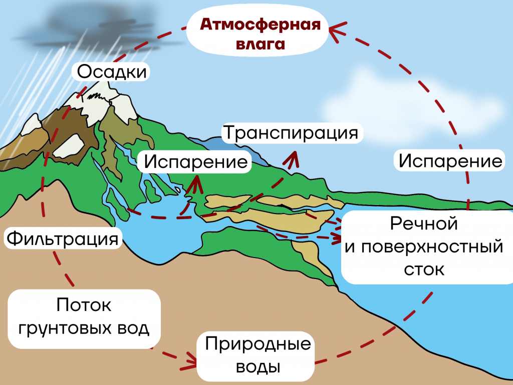Испарение — вода на поверхности водоемов под действием солнечного тепла превращается в пар или вода испаряется растениями (транспирация).
Конденсация — пар в атмосфере соприкасается с потоками холодного воздуха, охлаждается и снова преобразуется в жидкость. Вы можете ее увидеть в виде росы на траве или на небе в виде облаков.
Выпадение осадков — попадая на землю, вода просачивается сквозь почву, питает растения и попадает в подземные потоки.
Круговорот углерода
Каждый живой организм имеет в своем составе молекулы углерода. Атомы углерода постоянно мигрируют из одной части биосферы в другую. Большая часть запаса углерода находится в атмосфере, где он представлен в виде углекислого газа.
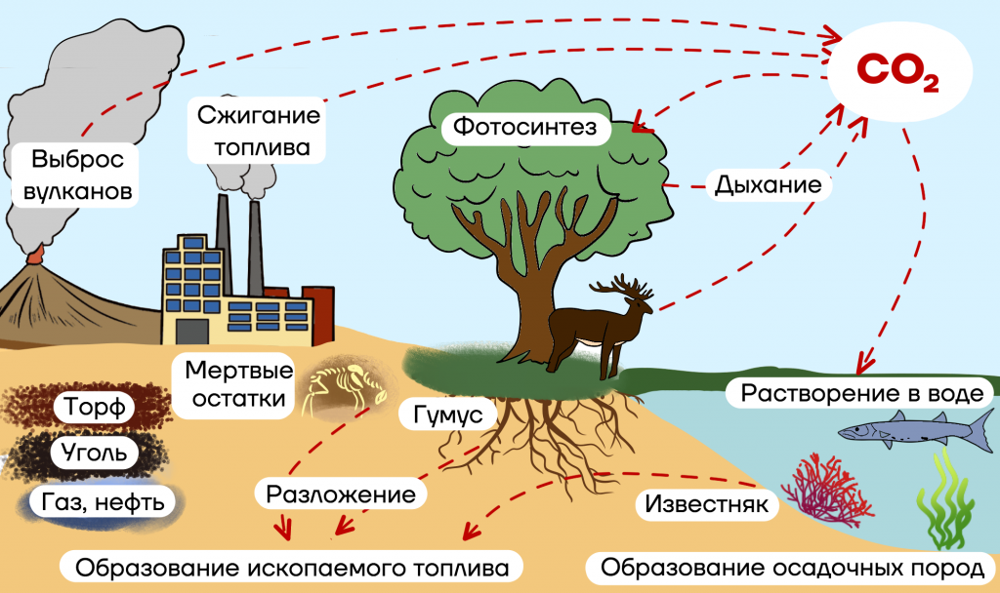1.Растения поглощают из атмосферы углекислый газ во время фотосинтеза.
2.Происходит образование глюкозы во время фотосинтеза.
3.Дальше путь углерода может идти в двух направлениях. Если растение погибло, то при разложении — углекислый поступает в атмосферу, либо преобразуется в нефть, уголь, газ. Если растение съест растительноядное животное, то во время дыхания он вернется в атмосферу. Каждый раз, когда мы дышим, мы участвуем в круговороте углерода, потому что выдыхаем CO2.
Круговорот азота
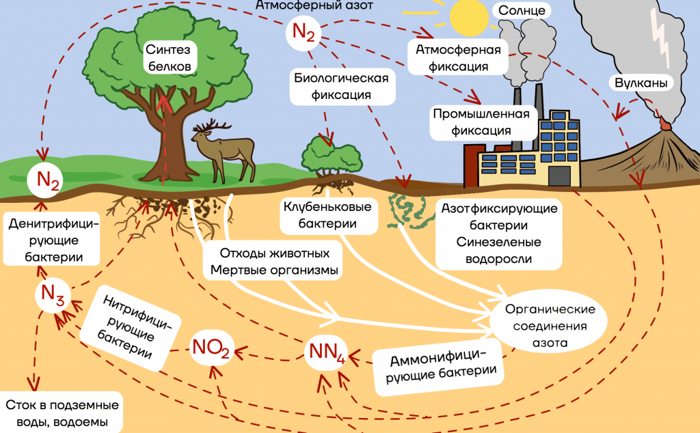1.Атмосферный азот поступает из атмосферы в почву.
2.Растения его поглотить не смогут, поэтому требуется помощь азотфиксирующих бактерий. Они находятся на корнях бобовых культур. Они фиксируют азот из атмосферы и превращают в амоний.
3.Затем за работу принимаются нитрифицирующие бактерии. Они превратят амоний в нитриты, а затем в нитраты.
4.Нитраты поглощаются растением и преобразуются в органические вещества.
5.Растительноядные животные поедают растения.
6.Затем растение и животное умирают, и в работу включаются денитрифицирующие бактерии. В результате денитрификации азот опять возвращается в атмосферу.
Круговорот фосфора
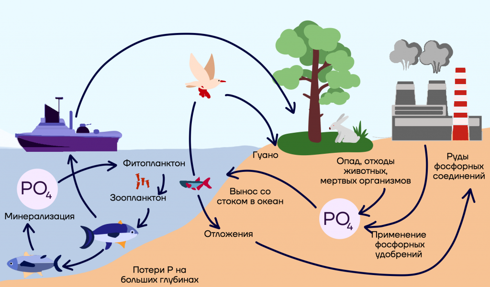1.Фосфор накапливается в отложениях, которые образовались в прошлых геологических эпохах.
2.Растения поглощают фосфор в виде растворенных фосфатов водного раствора.
3.Затем он транспортируется уже к другим организмам через пищевые цепи.
4.В организме животных он окисляется и выделяется в атмосферу при разложении бактериями остатков продуктов жизнедеятельности.
5.Когда организм умирает, организмы-редуценты минерализируют органические вещества мертвых организмов в неорганические фосфаты, которые вновь могут быть использованы растениями.
Почва
Почва
Почва — верхний плодородный слой земной коры, который составляет от 2-3 см до 2 м.
Почва образуется в результате выветривания верхний слой горных пород разрушается и становится рыхлым. В него попадает вода, в нём появляются бактерии, грибки, лишайники, а потом и растения. Постепенно в этом рыхлом слое из мельчайших частиц горных пород накапливаются продукты разложения органических веществ — перегной (или гумус), и слои этих горных пород постепенно, но очень медленно превращаются в почву. В умеренных широтах слой почвы толщиной в 1–2 см образуется в течение 100 лет. Получается, что для образования почвы требуется вещество всех оболочек Земли — земной коры, гидросферы, атмосферы и биосферы.
Состав почвы
Поверхностный слой почвы, пронизанный живыми и мёртвыми корнями растений, корневищами многолетних трав называют дёрном (или дерниной). В нём содержится большое количество органических веществ.
Твёрдая часть почвы состоит из частиц минералов и горных пород, из остатков растений и гумуса. Жидкая часть почвы — это вода с растворёнными в ней веществами. Поры и пустоты между частичками почвы заполнены воздухом, это газообразная часть почвы.
Частью почвы являются живые организмы, в том числе многочисленные беспозвоночные, насекомые и их личинки, дождевые черви. В почве обитают некоторые виды млекопитающих, например сурки, суслики, мыши, кроты, землеройки, которые перемешивают почву.
Строение почвы
Слои почвы, которые образуются в процессе почвообразования, называют горизонтами почвы, или почвенными горизонтами. Обычно таких горизонтов три. Верхний почвенный горизонт пронизан корнями растений, в нём много микроорганизмов, червей, насекомых. В этом верхнем слое почвы происходит накопление органического вещества и образование перегноя (или гумуса). Следовательно, этот горизонт называют гумусовым горизонтом.
Сквозь почву просачивается вода.
Она растворяет содержащиеся в почве питательные вещества, вымывает частицы гумуса и уносит их вниз.
Образуется второй горизонт — горизонт вымывания, который имеет светло-серую окраску.
Горизонт вымывания по цвету напоминает золу, и его также называют подзолистым горизонтом.
Вынесенные из верхних слоёв почвы вещества накапливаются в следующем слое, который находится ещё ниже.
Этот слой называют горизонтом вмывания.
Вода словно «вмывает» в него питательные вещества, потому что ниже залегает более прочный слой — горная порода, на которой образуется почва.
От того, из каких веществ состоит эта порода, во многом зависит состав почвы.
Поэтому почвообразующая порода имеет ещё одно название — материнская горная порода.
Типы почв
Многие почвы получили названия по цвету поверхностного слоя. Почвы лесостепей и степей умеренного пояса называют чернозёмами. Их цвет определяет большое количество чёрного гумуса. Толщина гумусового горизонта может превышать 1 м.
Чернозёмы — самые плодородные почвы.
Почвы сухих степей или полупустынь содержат меньше гумуса, чем чернозёмы, и имеют более светлую коричневую окраску. Они получили название каштановые почвы. Почвы влажных тропических или дождевых лесов называют красными, или латеритными (от лат. later — «кирпич»). Красный цвет почвам придаёт железо.
Поверхностные дождевые и талые воды могут размывать почву. Это явление может не только препятствовать накоплению в почве питательных веществ, но и лишать её их. Сильные потоки воды могут даже смывать верхний слой почвы и переносить его на другие участки местности. Весной можно наблюдать, как потоки талой воды смывают почву со склонов и уносят в реки.
Если почва не закреплена, например, корнями растений, ветер поднимает её вверх и переносит в другую местность, нередко засыпая дороги и разные строения. Это явление получило название «пыльные бури». В результате почва гибнет. Слишком большое количество химических удобрений, разливы нефти и других веществ могут погубить живых обитателей почвы.
Мировой океан
Мировой океан — главная часть гидросферы. Мировой океан занимает свыше 361,1 млн км² (около 70,8%) земной поверхности. Мировой океан имеет значение даже для тех районов суши, которые удалены от морских побережий на тысячи километров.
По особенностям распределения воды и суши можно разделить земной шар на океаническое и материковое полушария. В океаническом полушарии воды Мирового океана занимают 90,5% площади, в материковом полушарии — 52,7%.

Части мирового океана
Мировой океан делится на океаны. Естественными границами океанов служат материки. Большинство существующих условных границ между океанами были приняты в 1845 г. Королевским Географическим Обществом в Лондоне.
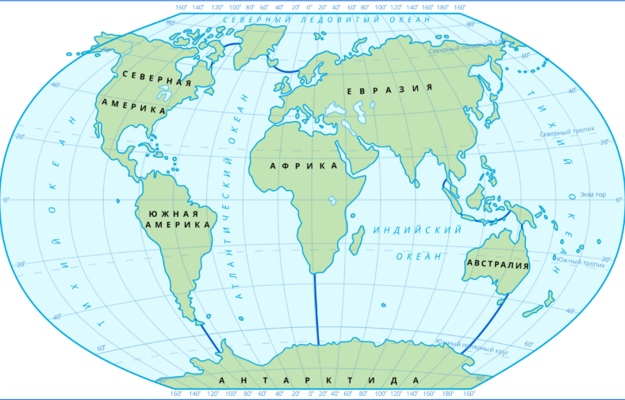До 2000 года было принято выделять четыре океана — Тихий, Атлантический, Индийский и Северный Ледовитый. В 2000 г. Международная гидрографическая ассоциация приняла выделение пятого Южного океана, расположенного вокруг Антарктиды.
Особенности строения океанического дна
По некоторым представлениям дно океана образует земная кора океанического типа с малой мощностью (8–10 км) и отсутствием гранитного слоя. Ложе океана сложено преимущественно базальтами, на которых залегает чехол осадочных пород.
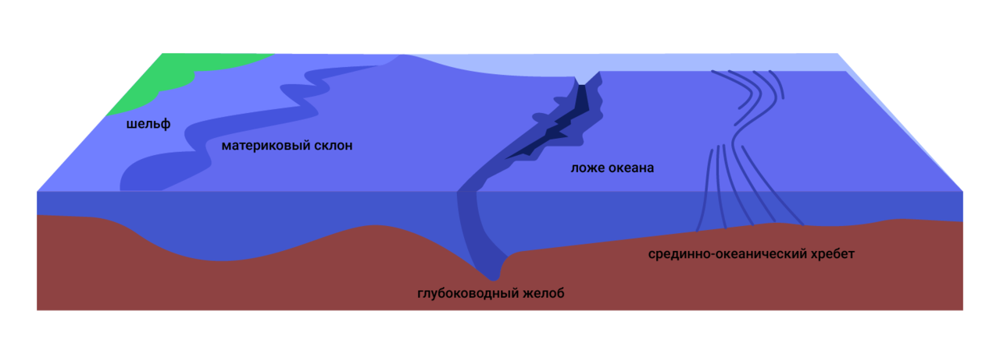В рельефе Мирового океана выделяют несколько форм, отличающихся особенностями строения и происхождения:
1.шельф (материковая отмель)
2.материковый склон
3.ложе океана (подводные равнины)
4.срединно-океанические хребты
5.глубоководные желоба
Океанические течения
Водные массы обладают разными свойствами и находятся в постоянном движении. Горизонтальное движение водных масс в океане называется океаническим течением. Течения возникают не только на поверхности океана, но и на глубине.
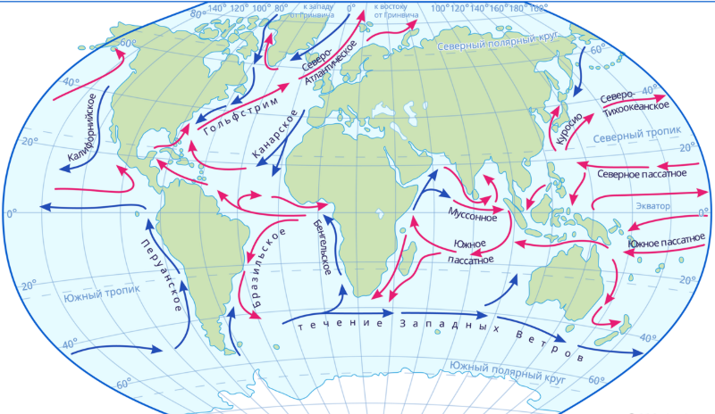Население Земли
Численность населения растет ежегодно, это факт. На данный момент людей на Земле насчитывается чуть более 8 млрд.
Нынешняя ситуация такова, что страной с самым многочисленным населением является Индия. В 2022 году она вышла на первое место по численности населения, обогнав Китай. В учебниках список может выглядеть немного иначе из-за того, что темпы увеличения численности населения в странах разные и почти каждый год кто-то вырывается вперед в этом списке.
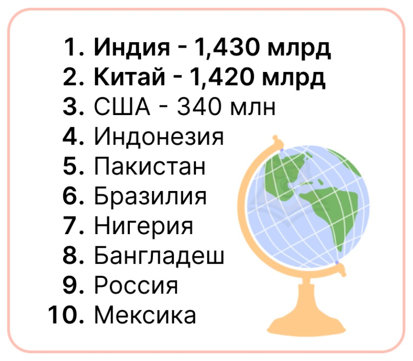Демографические показатели
Демография — это наука об изменениях структуры и численности населения и закономерностях этих изменений.
Демографические показатели — статистические показатели, которые дают общее представление о населении и его социально-экономическом развитии.
Механический прирост (миграция) — это разница между количеством иммигрантов (въезжающих в страну) и эмигрантов (уехавших из страны).
Естественный прирост (ЕП) — разница между количеством рождений и смертей.
Общий прирост — сумма естественного и механического прироста.
Географическое пространство России
Основные характеристики
Россия находится полностью в Северном полушарии, в двух частях света: Европе и Азии. Россия являемся первой по следующим показателям:
По площади территория, которая составляет 17,1 млн км².
По общей протяженности границ > 60 тыс км.
По числу пограничных государств. С Россией граничит 18 стран (на суше 16).
Протяжённость с запада на восток около 10000 км, с севера на юг – более 4000 км.
Крайние точки
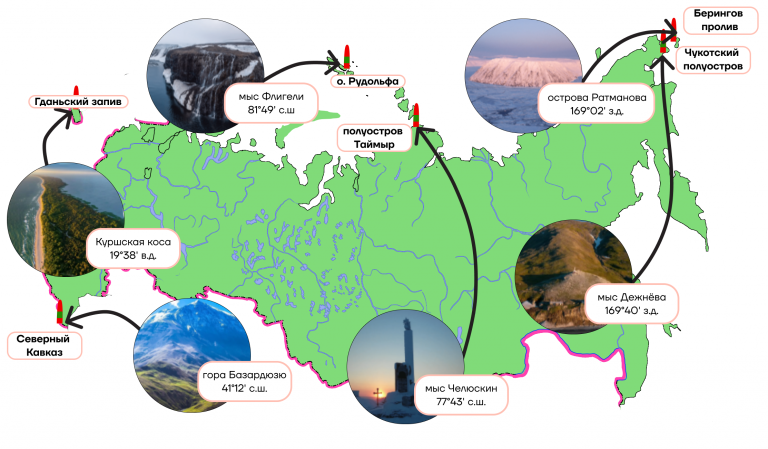Акватория
Россия омывается водами трёх океанов (Северного Ледовитого, Атлантического, Тихого) и 12 морей. Стоит отметить: Каспийское море – это озеро.
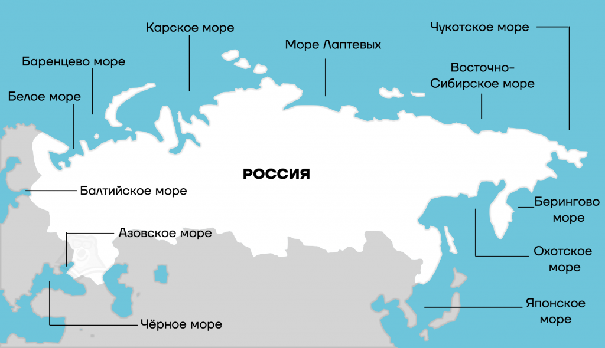Государственная граница
Россия граничит с 18 государствами
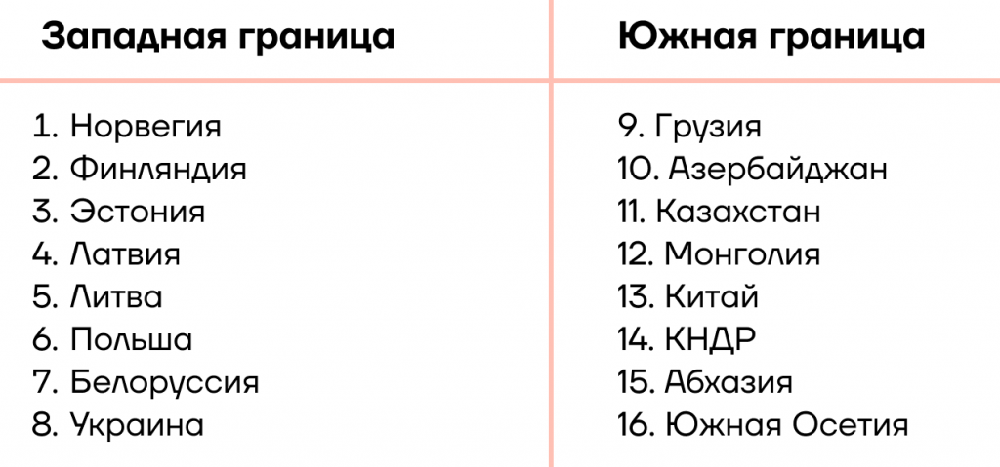Геологическое строение, рельеф и полезные ископаемые
Полезные ископаемые России
Месторождения рудных полезных ископаемых обычно находятся в горах: они образовались из магмы при контакте с другими горными породами. Чаще всего залежи этого добра находятся в старых горах.
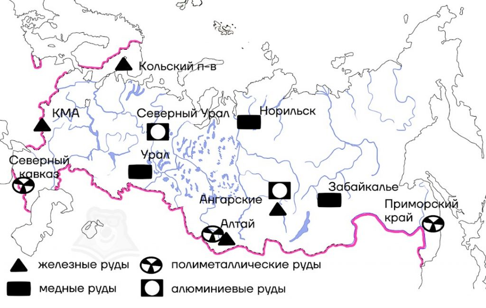Горы
Гора — форма рельефа, изолированное резкое поднятие местности с выраженными склонами и подножием или вершина в горной стране.По характеру вершины выделяют пикообразные, куполообразные, платообразные и другие горы. Вершины подводных гор могут представлять собой острова.
Кавказские горы — горная система, расположенная в Евразии между Чёрным и Каспийским морями. Это складчатые горы с некоторой вулканической активностью, которые сформировались в эпоху Альпийской складчатости. В их основе — магматические породы.
Среди полезных ископаемых: медные, свинцово-цинковые и вольфрамовые руды.
Крымские горы — горная система, занимающая южную и юго-восточную часть Крымского полуострова. Являются частью Альпийской складчатой геосинклинальной области. Имеют в своей основе магматические породы.
Здесь находятся месторождения железных руд, различных солей, флюсовых известняков и др.
Уральские горы — горная система на Урале, расположенная между Восточно-Европейской и Западно-Сибирской равнинами.
Образовались в позднем палеозое в эпоху интенсивного горообразования (герцинская складчатость).
Сложены магматическими породами. В горах имеются месторождения каменного угля, нефти и газа, калийных солей, драгоценных, полудрагоценных и поделочных камней (изумруд, аметист, аквамарин, яшма, родонит, малахит и др.).
Алтайские горы, или Алтай — горная система в Азии, на юге Сибири и в Центральной Азии, состоящая из высокогорных и среднегорных хребтов, разделённых глубокими долинами рек и обширными внутригорными и межгорными котловинами.
В основе лежит каледонская и герцинская складчатость. Слагающие породы — магматические.
Основные полезные ископаемые — золото и полиметаллические руды.
Саяны — общее название для двух горных систем на юге Сибири: Западного Саяна и Восточного Саяна.
Произошли от каледонской складчатости. В основе — магматические породы.
Здесь находятся месторождения асбеста, гранита, а также молибденовых, ртутных и вольфрамовых руд.
Прибайкалье — горная область на юге Восточной Сибири, прилегающая с запада и востока к озеру Байкал в Иркутской области и Республике Бурятия.
Забайкалье — историко-географическая область в России на юго-востоке Восточной Сибири и юго-западе Дальнего Востока, к югу и востоку от озера Байкал.
Хребты образовались во время байкальской складчатости. В основе — магматические породы.
В этих областях есть месторождения следующих полезных ископаемых: асбеста, лазурита, мрамора, полиметалических и железных руд.
Чукотское нагорье — система средневысотных хребтов и массивов в центральной части Чукотского автономного округа, в северо-восточной части Дальнего Востока России.
Корякское нагорье — нагорье на Дальнем Востоке России, расположенное на территории Чукотского автономного округа и Камчатского края.
Колымское нагорье — нагорье в России, на территории Северо-Восточной Сибири, большей частью в пределах территории Магаданской области
Все три нагорья образованы во время мезозойской складчатости, в их основе — магматические породы. В этих районах открыты месторождения золота, а также оловянных и железных руд.
Верхоянский хребет — горная цепь в Якутии, расположенная на границе Евразийской и Северо-Американской литосферных плит.
Хребет Черского расположен на Северо-Востоке Сибири.
Сихотэ-Алинь — горная область на Дальнем Востоке России, на территории Хабаровского и Приморского краёв.
Образованы во время мезозойской складчатости, в основе — магматические породы. Основным полезным ископаемым, которое добывается в этих районах, являются руды металлов.
Срединный хребет — горная цепь, главный водораздельный хребет на полуострове Камчатка.
Образован во время альпийской складчатости, в основе лежат вулканические и магматические породы. Имеются месторождения полиметаллических и медных руд.
Равнины
Равнины — обширные участки земной поверхности, которые отличаются малыми колебаниями высот и небольшими уклонами.
По высоте равнины делятся на:
низменности (до 200 м над уровнем моря),
возвышенности (от 200 до 500 м над уровнем моря),
плоскогорья (от 500 до 1000 м над уровнем моря).
Равнины России
Восточно-Европейская равнина, или Русская равнина — обширная равнина в Восточной Европе, составная часть Европейской равнины. В её основании залегают Русская плита с докембрийским кристаллическим фундаментом, на юге северный край Скифской плиты с палеозойским складчатым фундаментом.Слагающими породами являются осадочные и магматические.Ископаемые осадочного происхождения: нефть, газ и каменный уголь, магматического — марганцевые и железные руды.
Западно-Сибирская равнина — равнина на севере Азии, занимающая западную часть Сибири (от Уральских гор до Среднесибирского плоскогорья). В её основании лежит эпигерцинская Западно-Сибирская плита, фундамент которой сложен интенсивно дислоцированными палеозойскими отложениями.Слагающие породы — осадочные.Здесь обнаружены богатые месторождения нефти и природного газа (Западно-Сибирский нефтегазоносный бассейн), а также угля и железной руды.
Среднесибирское плоскогорье — плоскогорье в пределах Сибирской платформы в восточной части России на территории Восточной Сибири — в Якутии, Красноярском крае и Иркутской области.Основой является древняя докембрийская платформа, слагающими породами — осадочные и магматические.В пределах плоскогорья находятся месторождения алмазов, никелевых, медных, железных и алюминиевых руд, каменного угля, графита, каменной соли, нефти и природного газа.
Северо-Крымская равнина — часть Причерноморской низменности в границах Крымского полуострова.Основа равнины — молодая плита, слагающие породы — осадочные.
Климатические условия
Климат
Климат – многолетний режим погоды. Можно сказать, это её среднее арифметическое за десяток лет и более.
Климатообразующие факторы
1.Угол падения солнечных лучей. Он зависит от широты пункта. Чем дальше мы от экватора (в идеале от зенита), тем меньше угол падения солнечных лучей, тем меньше солнечного тепла мы будем получать.
2.Циркуляция атмосферы – система воздушных течений над земной поверхностью. Можно сказать, что это преобладающие ветры (воздушные массы). Чаще всего мы говорим о влиянии муссонов, пассатов и западных ветров. Муссоны летом приносят осадки.
Пассаты и западные ветры постоянны, дуя с океана, приносят осадки в течение года более равномерно.
3.Океанические течения. Тёплые течения способствуют конденсации и выпадению осадков на побережье, холодные, наоборот, препятствуют формированию осадков. Где такое наблюдается ярче всего? На юго-западе Африки холодное течение мешает формированию здесь осадков, вследствие чего на побережье будет расположена пустыня Намиб. Тоже самое происходит в западной части Южной Америки, там вообще формируется самое засушливое место на планете – пустыня Атакама.
4.Рельеф.На высоте выпадает больше осадков. Место, находящееся на высоте со стороны, на которую приходятся осадки, называется наветренным.Низменный рельеф способствует проникновению вглубь континента воздушных масс. Так, например, на Алтай могут прийти воздушные массы с Арктики из-за низменного рельефа Западной Сибири. Это невероятно, учитывая то, где Алтай и где Арктика.
5.Подстилающая поверхность.Она влияет на прогревание территории.
6.Удаленность от океана
Воздушные массы
Воздушные массы (ВМ) – горизонтально вытянутые огромные массы воздуха, схожие по определённым свойствам (температура, влагосодержание). Эти свойства определяются за счет характеристик района над которым они возникли.
Выделяют 4 основных (зональных) типа воздушных масс с разным давлением:
экваториальные (низкое давление),
тропические (высокое),
умеренные (низкое),
арктические (высокое).
Атмосферный фронт
Атмосферным фронтом называют раздел между двумя разнородными воздушными массами.
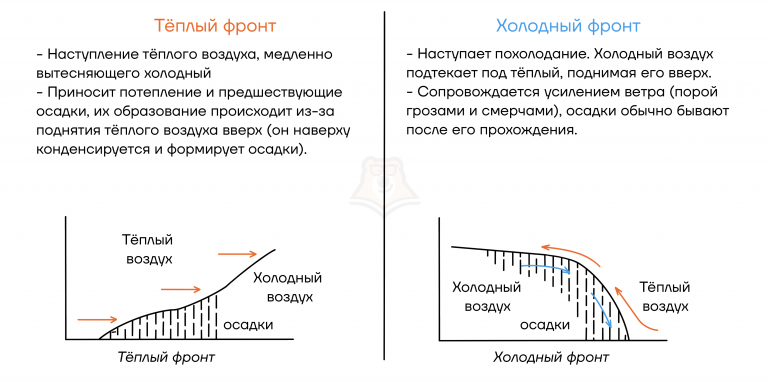Климатические пояса
Климатические пояса – широтно протянувшиеся территории со схожими климатическими показателями. В их основу положены тепловые пояса и зональные типы воздушных масс.